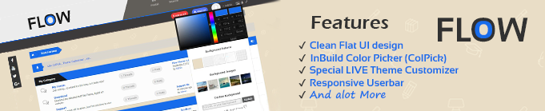

Welcome
Thanks for Downloading Flow Theme 1.8x

This Document will guide you through the process of installing the theme and Customizing it according to your needs. It will also give some brief details about the theme's features and credits.This Theme is Designed for Mybb 1.8x series. A special thanks goes to Mybb Team for creating such an awesome Forum Script.
Details
Author: HMR
License
custom license
- You can modify/remove/change anything in the theme according to your needs for your use
- You can even re-distribute but it must be free as this theme
- you can also use this theme freely for your commercial use
- you can do all the above things except removing the Credits of MyBB, MyBB Team and Myself(which you will found in footer of the theme) and if your respect my work, then i am sure you will not gonna do that. This will encourage us for making more free themes in future..
- you cannot remove any credits from theme's documentation as they were backbones of this theme.
Theme Features
The theme have many features, lets talk about them one by one.
- The Theme has Clean Flat UI design
- Nearly 97% Image Icons have replaced by FontAwesome icons
- The theme supports all newer versions of browsers
- It includes JQuery tool tip,fixed social media bar, custom JQuery Pie chart for Board Statistics
- Its Userbar is responsive (eg: Moderation Panel button and Admin Panel buttons goes into dropdown menu for smaller screens like mobile)
- Attractive JQuery Drop down menu, Button's hover, Animated CSS3 GO-TO-TOP icon
- small loading spinner has replaced by CSS3 Loading spinner(eg: it appears after Quick Post Submission)
- Latest Activity sidebar.
- JQuery Announcement ticker
- InBuild CSS3 JQuery Color Picker (ColPick) from which every user get chance to customize Theme's Color to any possible HEX code with availability to save it in cookies, It also have a Reset Button which takes you back to Original Theme Color (Admins can change the Default original color easily by editing a js)
- It also have a Custom JQuery Theme Customizer which is again available for every user of the forum, it contain some pre-defined Skin colors for the them (Admins can edit this also acording to there choice by editing a js script, if Admins only want pre-defined colors then they can remove the color picker or if they don't want pre-defined colors then they can remove that too every thing is explained in this documentation), the theme customizer also have background picker which have both patterns as well as images and if users bored with limited images/patterns then they can also set any pattern/image as background with custom background feature(they just need a image/pattern's URL).
If you want then you can also set Classic Postbit for every user by following some tutorials shown on MyBB Community Forum
Installation Guide
This guide will show you how to install flow theme in your MyBB Forum
- A working MyBB Forum of 1.8x series
- Flow theme zip File
- FTP access or some medium for uploading files
- Admin access in your MyBB Forum
- First Download and unzip Flow theme and go to Flow Theme 1.8x » upload and Copy and paste images folder to your Forum's Root Directory.
- After uploading images folder, now open your MyBB's Admin Control Panel and go to Home » Themes » Import a Theme
- Now Click on "Browse..." and choose Flow-theme.xml which you would find in Theme XML, check "Ignore Version Compatibility" and click Import Theme.
Social Media buttons

- For Replacing those button links simply go to your Admin CP » Templates & Styles » Templates » Flow Templates » Header Templates » header
- then search for these codes:

and for changing links of bars, replace those default social links with your once (eg: https://facebook.com)
Footer About Us Info & Links

- For Changing Footer Go to Admin CP » Templates & Styles » Templates » Flow Templates » Footer Templates » footer
- Then for Editing About Us info search for these codes:

and replace them according to your needs
- Now for Editing Links search for these codes in the same template:

and replace the links (href="...") and the icons (<i> tags, view fontawesome site for more info) and texts according to your needs.
News Ticker

- For Editing News Ticker's announcements Go To Admin CP » Templates & Styles » Templates » Flow Templates » Header Templates » header
- Now search for these codes:

and replace its announcements according to your needs.
- you can add even more announcements like this:

Theme Logo

For Replacing theme logo you have to keep 1 thing in mind that if you want color changing effect in logo (like default one) you need to keep your logo's background color to #ececec and keep your logo's portion transparent where you wants to see that effect other wise your logo will not sync properly with the color changing effect
you can directly replace logo by going into your Root Directory » images » flow and replacing logo1.png with your own logo.
If you wants to remove that color changing effect then Go to Admin CP » Templates & Styles » Templates » Flow Templates » Header Templates » header
And find these codes:

and remove coloreffect from class="imglogo coloreffect"
JQuery Color Picker (ColPick)

For Changing Theme's Default color (your forum's default color for new user who haven't used colpick yet) you need to Edit a Javascript, its easy
- Go to Your Root Directory » images » flow » js and open flow.min.js in notepad (Recommended notepad++)
- Now search var mainColor in the script (which you will find in upper part only).

you just need to fill your color hex code without # in place of 176ceb and save the script, the Reset button of Colpick too use it as default color
You can also change colpick's theme, it comes with 2 theme colors, dark & light (currently i have feed dark version).
- For changing colpick's theme again go to Your Root Directory » images » flow » js and open flow.min.js in notepad (Recommended notepad++)
- And search var PickerTheme in the script (which you will again find in upper part only).

you just need to replace dark to light if you want to switch to light theme.(it will be changed for all users of your forum)
For Removing Go to Admin CP » Templates & Styles » Templates » Flow Templates » Header Templates » header and remove these codes:

Theme LIVE Customizer

Skin Colors
For replacing Pre-defined skin colors with your own colors you need to Go to Your Root Directory » images » flow » js and open flow.min.js in notepad (Recommended notepad++)
and find these codes:

and change those HEX color code with your own HEX codes without #(i.e var Color1 = "your hex code here";)
For Removing Skin Colors from theme customizer Go To Admin CP » Templates & Styles » Templates » Flow Templates » Header Templates » header and remove these codes:

and in same template find:
<div style="margin-top: 100px; margin-bottom: 15px;"><b>Background Patterns</b></div>
and replace it with this:
<div style="margin-top: 50px; margin-bottom: 15px;"><b>Background Patterns</b></div>
Background Pattern & Background Image
For Replacing the Patterns/image simply Go to Your Root Directory » images » flow » backgrounds
all pictures with .png extension are patterns and pictures with .jpg extensions are images, simplly replace them with your pictures.
Peoples Who made Flow Theme Possible
- MyBB team - For Creating Such an Awesome Forum Script
- Dave Gandy - For crafting Great FontAwesome Icons
- Stackoverflow members - For Helping me in needs (like they helped me to fix some js errors for colpick & theme customizer)
- Jose Vargas - For creating great Colpick Plugin
- Codrops - For jquery tabstylebar used in this documentation & other tutorials
- lavaskins - For creating a nice tutorial of background changer (from where the theme customizer's milestone started)
- iAndrew - For creating cool image color picker tutorial (from where Colpick's milestone started)
- TrK - For Suggestions & help (like suggested patterns/images for theme customizer)
- Envira - For again some nice tutorials (like JQuery dropdown menu)
- eNvy - For Suggestions & helps (like suggested footer part)
- Jason Frame - For tipsy, facebook style tooltips for jquery
And all those who had contributed but not got mentioned here..
Please spread this theme by sharing it among your friends if you really like the theme